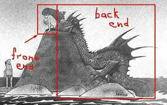
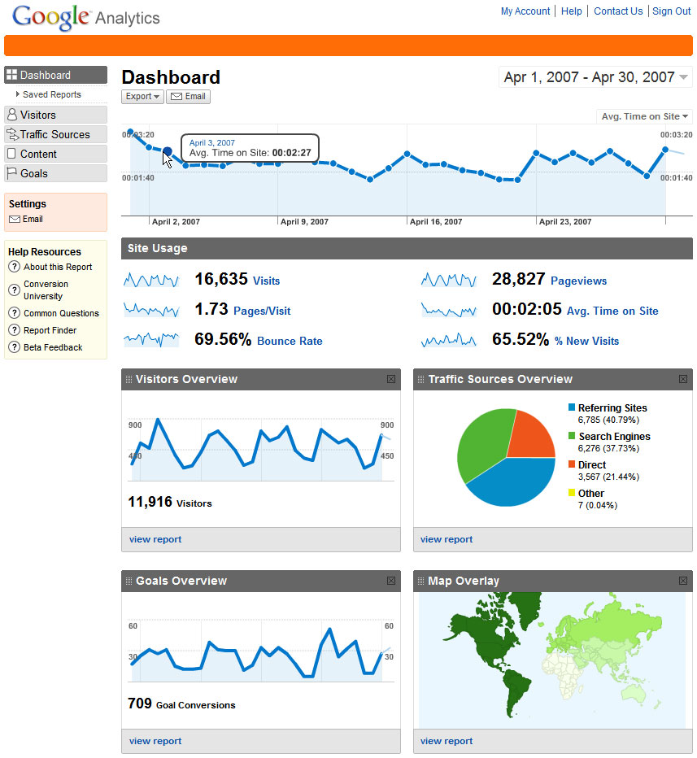
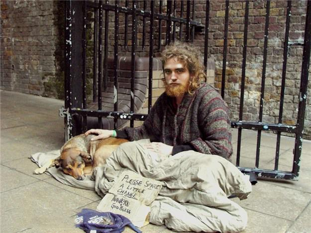
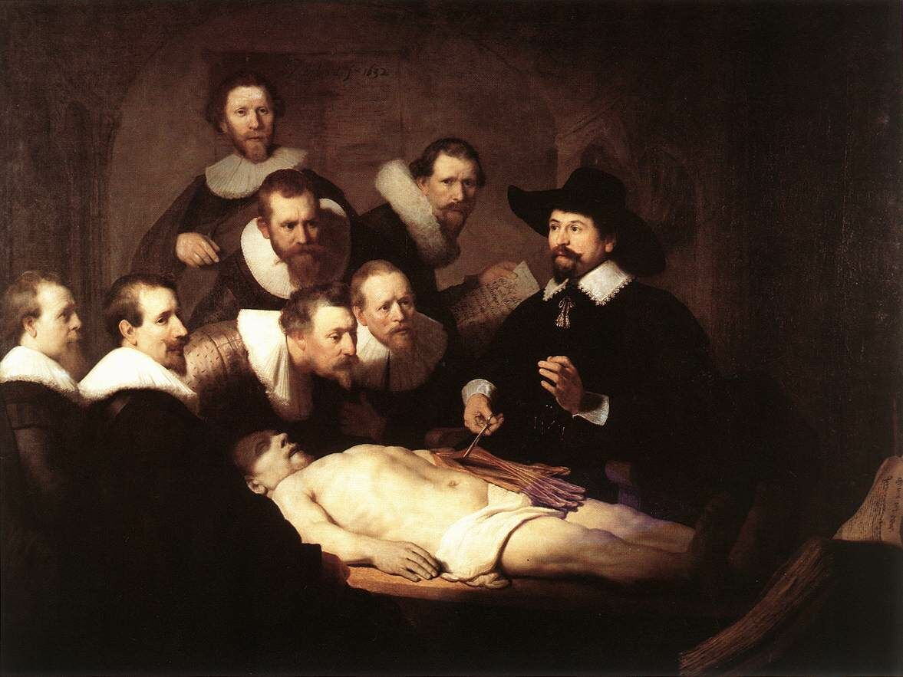
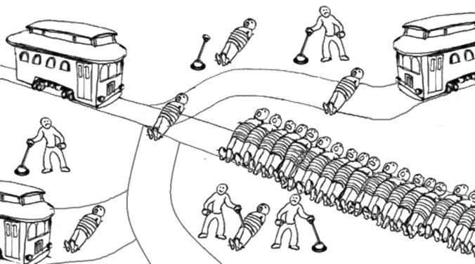

Flatland, или всем выйти из плоскости
Pavel Ajtkulovajtkulov@gmail.com
http://piano.io

M. C. Escher, Reptiles, 1943
About me
no copyrights (status: pet project)
(Big?) data engineer
Очевидность 1
Alice was beginning to get very tired of sitting by her sister on the bank and of having nothing to do: once or twice she had peeped into the book her sister was reading, but it had no pictures or conversations in it, "and what is the use of a book," thought Alice, "without pictures or conversations?'
Очевидность 2
Infographics?

Больше чем 2D
Сегодня

Не более чем 2D
Прототип
Live demo
OLAP для богатых
OLAP для бедных
Tertium non datur
Далее
Rembrandt, The Anatomy Lesson of Dr. Nicolaes Tulp, 1632
Прототип
Быстрота
Понятен бизнесу
Сырые данные в сотни Гб
Данные нужно готовить (покажу как)
Очевидность 3
Быстрота (данные в памяти)
Данных много, в смысле очень
Округление, абстракция, потеря информации
На выходе должен быть обозримый объем
Первая группировка
Выбор основого атрибута (клиент, страна, офис)
(спросить примеры предметной области)
Первая группировка (агрегация)
Посчитали агрегаты
С-join-или все данные
С 400 млн записей свели к 50 млн (все равно много)
Хьюстон?
Естественный граф
При агрегации данные распределены не равномерно
Как решить для вашего spark/big query/etc?
Проекции

Выбираем бизнес-адекватный набор измерений
7-12 измерений
Все влазит в RAM
Итого
Классификация OLAP-ов
Pros and Cons
Разговоры свободные темы
QA
Thank you
QA
Но гениальный всплеск похож на бред,
В рожденье смерть проглядывает косо.
А мы все ставим каверзный ответ
И не находим нужного вопроса
(с) Мой Гамлет, В. С. Высоцкий, 1972